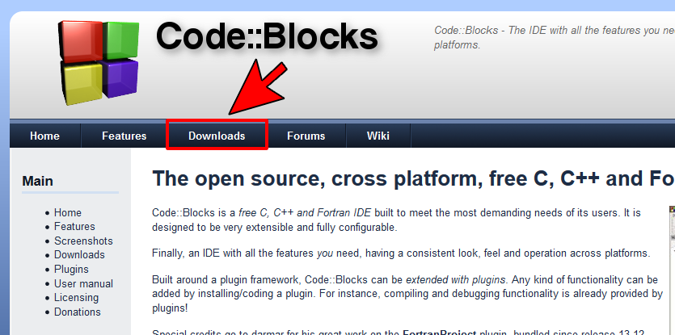
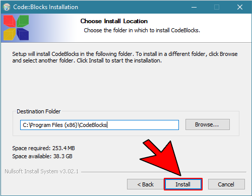

C++خطوات تحميل و تنصيب برنامج CodeBlocks
خطوات تحميل برنامج CodeBlocks
إبحث في جوجل عن codeblocks.
أنقر على رابط أول موقع يظهر لك في نتائج البحث و سيكون الموقع هو موقع codeblocks نفسه كما يظهر في الرابط.
بعد أن يفتح موقع codeblocks الرسمي, قم النقر على Downloads حتى تذهب للصفحة التي يمكن فيها إختيار نسخة البرنامح الذي ستستخدمه.

في هذه الصفحة الجديدة ستجد عدة خيارات لتحميل البرنامج.
قم بالنقر على خيار Download the binary release لأنها أسهل نسخة من ناحية التنصيب على الحاسوب.
في هذه الصفحة ستجد عدة خيارات للتحميل. إنزل في الصفحة حتى تجد قسم التحميل بنظام التشغيل الذي تستخدمه.
ملاحظة: نحن نسنخدم نظام ويندوز لهذا سنتوجه لخيارات التحميل الخاصة بنظام ويندوز.
بعدها قم بتحميل برنامج mingw-step.exe من خلال النقر على رابط التحميل الذي يظهر بجانبه من موقع FossHUB أو من موقع Sourceforge.net.
بعد أن تنقر على رابط التحميل من موقع FossHUB ستفتح صفحة جديدة و يبدأ تحميل البرنامج بشكل تلقائي.
إلى هنا, تكون قد قمت بتحميل برنامج CodeBlocks بنجاح و خطوتك التالية هي تنصيبه.
خطوات تنصيب برنامج CodeBlocks
بعد تحميل CodeBlocks قم بفتحه حتى تبدأ بتنصيبه.
أنقر بزر الفأرة الأيمن على الملف, ثم إختر Run as administrator.
إضغط على Next.
ضع علامة صح على I Agree.
قم بإبقاء كل شيء مختاراً و إضغط على Next.
إضغط على Install.

بعد أن ينتهي تنصيب البرنامج بنجاح سيسألك إن كنت تريد تشغيله الآن.
إضغط على Yes لأنه يوجد خطوات بسيطة يجب أن تفعلها أول مرة تقوم فيها بتشغيل برنامج CodeBlocks و سنفعلها الآن.
أنقر على GNU GCC Compiler, ثم أنقر على ثم Set as default, ثم أنقر على OK.
الآن ستلاحظ أن واجهة برنامج CodeBlocks ستفتح و سيظهر لك رسالة فيها أربع خيارات.
إختر Yes, associate Code::Blocks with C/C++ file types ثم إضغط على OK.
إلى هنا, تكون قد قمت بتنصيب برنامج CodeBlocks بنجاح.
خطوات تشغيل برنامج CodeBlocks
لتشيغل البرنامج ستجد أيقونته على سطج المكتب, و إذا لم تجد أيقونته فببساطة إبحث عنه, أي أنقر على زر البحث ثم أكتب codeblocks كالتالي.
بعد أن تجد أيقونة البرنامج, أنقر عليه فقط و سيفتح كالتالي.
الآن, قم بالعودة للدرس لتتعلم كيف تنشئ مشروع جديد (أي برنامج) بواسطة CodeBlocks و تقوم بتشغيله.

 محرر الويب
محرر الويب نظام الألوان
نظام الألوان محول الوحدات
محول الوحدات محلل عناوين الشبكات
محلل عناوين الشبكات